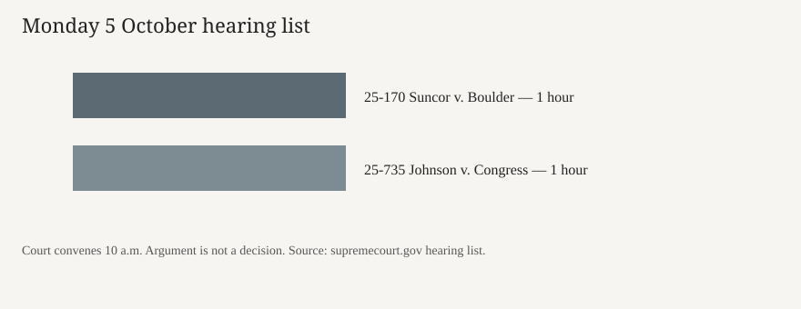

Washington · courts · 5 October 2026
The Supreme Court opened October Term 2026 with Boulder’s climate suit and Johnson v. Congress

What the desks agree
The Supreme Court of the United States convened the October Term 2026 session on Monday 5 October at 10 a.m. The Court’s own hearing list for that session names two arguments on Monday. The first is No. 25-170, Suncor Energy (U.S.A.) Inc. v. County Commissioners of Boulder County, on certiorari to the Colorado Supreme Court, one hour, with Kannon K. Shanmugam for the companies, Sarah M. Harris, principal deputy solicitor general, for the United States as amicus, and Kevin K. Russell for Boulder. The second is No. 25-735, Floyd D. Johnson v. United States Congress, from the Eleventh Circuit, also one hour, with Jeffrey W. Chen for the petitioner and Kevin J. Barber for the government. Afternoon arguments on the list begin at 1 p.m.; Monday’s two cases are both set in the morning block as printed.
NPR’s Morning Edition described the opening case as a climate dispute in which local governments want to sue energy companies for financial damages tied to fossil fuels. ABC’s Good Morning America used the same frame and added that the term includes administration appeals on rapid deportation to third countries and on detention without bond, plus personal appeals by President Donald Trump concerning an 83 million dollar civil judgment in the E. Jean Carroll case, a conspiracy claim against Hillary Clinton and the Democratic National Committee, and a defamation claim against CNN. Those additional cases are on the docket or expected; they are not Monday’s two hearing-list entries.
What is only a quote
Fox News wrote that the term opens “with fresh questions over its legitimacy” and that public approval is at a record low. That is a frame plus a poll claim. The hearing list does not measure approval. Above the Law described Justice Samuel Alito’s comments on retirement as a cynical midterm signal. The New York Times podcast bill for Monday says Alito considers each year whether to retire. A justice saying he reviews retirement is not a resignation letter. Treating the comment as a campaign device is commentary.
Reuters’ morning podcast listed the new term as a docket that will test the limits of presidential power. That is a fair description of the kinds of cases lawyers expect. It is not a holding. No opinion issued on Monday morning in the sources scored here.
The mechanism a reader needs
The Court sits in a term that runs from the first Monday in October into the next summer. Argument is not decision. A vote is taken in conference, an opinion is assigned, and the public result can arrive months later. Certiorari means the Court has agreed to review a lower judgment. In Suncor, the question the briefs present, as described by NPR, is whether municipal claims about climate harm belong in state court under state tort law or are displaced by federal law. The companies and the solicitor general’s appearance on the petitioners’ side of the hearing list indicate the United States is supporting the energy defendants as a friend of the court, not that the United States is a party.
Johnson v. United States Congress is on the list and not explained in the wire pieces used here. The caption says a private petitioner is suing Congress and that the government is defending. Until the opinion or a full transcript is the source, the claim’s theory should stay at the caption. Midterm elections are five weeks from Monday, on 3 November 2026, if the calendar holds. The Court does not pause for campaigns. Election-related orders, if they come, will be separate from Monday’s climate hour.
Emergency applications, sometimes called the shadow docket, are not the hearing list. Fox cites a win rate above 70 percent for the Justice Department on emergency stays since 2025. That figure is the outlet’s tally of interim orders, which do not finally decide the merits. A reader can ask for the denominator. It is not Monday’s argument.
What this story is not
It is not a ruling for or against Boulder, Suncor, or Congress. It is not a retirement. It is not a photograph of the justices entering. The building frame is from 2018. It is not a prediction of the midterm.


Source articles and scores
| Outlet | Headline | T | N | C |
|---|---|---|---|---|
| Supreme Court of the United States | Hearing list for the session beginning October 5, 2026 | 99 | 0 | 100 |
| NPR | Morning Edition for October 5, 2026 — Supreme Court’s new term kicks off with blockbuster climate change case | 92 | -4 | 90 |
| ABC News / Good Morning America | As election looms, Supreme Court reconvenes to new wave of Trump cases | 88 | -8 | 76 |
| Fox News | Supreme Court kicks off new term with fresh questions over its legitimacy and its future | 78 | +22 | 64 |